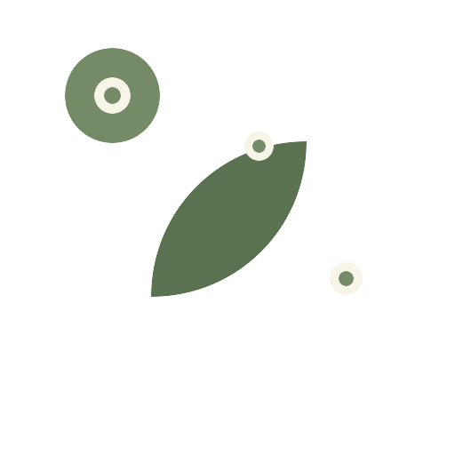

中药材全过程溯源管理系统
药途寻迹
以一物一码连接种植、加工、质检、物流与消费核验，让每一批药材的来源、状态和责任节点形成可信数据链。
问题起点
传统溯源断点太多
纸质记录、事后补录、批次拆分和跨主体流转，让中药材质量责任难以闭环。
01
记录不连续种植、加工、质检、物流数据分散，批次链路难以复原。
02
核验成本高消费者只能看到静态信息，监管方缺少可追溯证据。
03
质量卡点弱质检、发运和库存变更没有强约束，容易出现数据漂移。
全流程链路
从田间记录到终端扫码
种植
- 扫码开工
- 人员身份校验
- 地点与时间快照
加工
- 批次流转
- 工艺记录
- 产出重量换算
质检
- 报告绑定
- 合格准入
- 异常批次拦截
物流
- 发运赋码
- 链路锁定
- 公众核验入口
关键业务机制
扫码不是入口，是状态机
扫码开工
作业人员在现场扫码，系统验证角色、批次状态和作业权限，再写入地点、时间和开工流水。
CREATED
→
IN_PROGRESS
→
RECORDED
身份JWT + 角色权限
现场经纬度 + 服务器时间
批次前置状态校验
扫码发运
发运前自动检查质检合格状态，生成 GS1-128 编码，并锁定已经进入流通环节的关键溯源数据。
QA PASS
→
GS1 LOCK
→
SHIPPED
准入质检合格后允许发运
编码GTIN + Batch + 重量
锁定流通数据只读保真
系统架构
移动端采集，后端编排，可信层核验
微信小程序承接一线操作，Spring Boot 负责权限、批次、质检、物流与编码服务，关键摘要进入区块链存证。
微信小程序 企业录入 / 消费查询
API 网关 JWT / 权限 / 参数校验
业务服务 批次 / 质检 / 物流 / 编码
数据层 MySQL / Flyway / 审计记录
可信层 EVM Hash Anchor / TxHash
标准编码
GS1-128 把批次变成工业语言
(01)06912345678901(10)B-FARMER-20260209-KY(3102)005780
系统自动统一产品代码、批次号、生产日期和重量单位，降低人工贴标与跨环节流转误差。
哈希存证
不上链明细，上链证据
0xeafd103af27942a7 · 0x38c0f788d64d402f
种植记录已采集
质检报告已合格
物流事件已锁定
TxHash可核验
多角色协同
同一条链路，不同的操作界面
农户扫码开工、上传农事记录、形成批次起点。
加工厂接收批次、记录工艺、换算产出重量。
物流绑定发运单、记录节点、维护流向信息。
监管方审计全链路、核查质检和上链凭证。
长白山人参已核验
种植：吉林白山 · 2026-02-09
加工：净制切片 · 重量守恒
质检：合格报告已绑定
物流：发运赋码 · 可追踪
AI 解读：该批次已完成质检与发运锁定，可查看产地、批次编码和存证记录。
面向中药材产业数字化转型
一物一码，一链到底
药途寻迹把业务流程、质量控制和可信核验放进同一套系统，让企业可操作、监管可追溯、消费者可理解。
全流程种植、加工、质检、物流连续记录
强卡点质检准入、GS1 锁定、状态机约束
可核验批次编码、哈希存证、公众扫码展示
 药途寻迹
药途寻迹
可信溯源平台